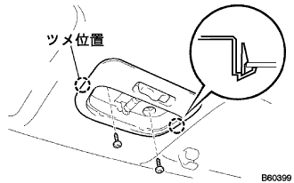
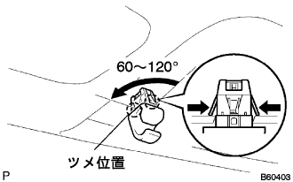
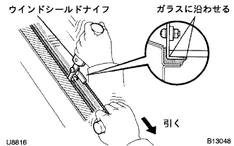

Wind shield glass removal |
| 1. Remove the window shield wiper arm cover |
| 2. The front wiperarm RH is removed |
Remove the nut and remove the front wiperarm RH.
| 3. Remove the front wiperarm LH |
Remove the nut and remove the front wiperarm LH.
| 4. Food toe cowl top seal removal |
 |
Remove the six places on the clip and remove the bonnetto (hood) Tsu cowl top sticker.
| 5. Cowl Top Ventilator Louva RH |
 |
Remove the two clips and seven claws, and remove the cowl top ventilaarver RH.
| 6. Cowl Top Ventilator Louva LH removed |
 |
Remove one clip and eight claws, and remove the cowl top ventilaarver LH.
| 7. Front door opening trim Weather strip RH is removed |
| 8. Remove the front pillar garnish LWR RH |
 |
Pull up from the rear end of the vehicle and remove 5 places of claws.
Pull the back of the vehicle and remove the front pillar garnitsui LWR RH.
| 9. Remove the front pillar garnish RH |
 |
Pull it from the upper part of the garnit to the inside of the vehicle, remove the clip, and remove the front pillar garnish RH.
| 10. Reardoor opening Trim Weather Strip LH removed |
| 11. Pillar No.1 Garnish LH removed |
Remove the claws and remove the pillar No.1 Garnitsui LH.
| 12. Remove the front pillar garnish LH |
 |
Pull it from the upper part of the garnish to the inside of the vehicle, remove the clip, and remove the front pillar garnish LH.
| 13. Map lamp ASSY removes |
 |
Use a minus thin blade driver with a protective tape to remove the claws and remove the lens.
Take off two screws.
|  |
Remove the claws.
Remove the connector and remove the map lamp ASSY.
| 14. |
 |
Use a minus thin -blade driver with a protective tape, remove the claws and remove two assist gritpo cover.
 |
Remove the claws in the order of the figure, and remove the assist grip asser.
| 15. Viser ASSY RH removed |
Remove the two screws and remove the Viser ASSY RH.
| 16. Viser ASSY LH removed |
| 17. Remove the viza holder |
|  |
Rotate the Vizer Holder to the left 60-120 ° and pull it out.
| 18. Roof head lining ASSY removes |
| 19. Innariya View Mirror ASSY removes |
 |
Use a flathead screwdriver with a protective tape to remove the claws and remove the inneryabi Umiller Cover.
Use a flathead screwdriver with a protective tape to press the claw in the direction of (A).
Pull out the inneryabi Umiller ASSY in the direction of (B) in the figure and remove the inanariyabi Umiller ASSY.
| 20. Remove the wind shield outside molding |
Use a cutter knife to cut the windshield outside molding.
| 21. Wind shield glass removed |
Cut the connector.(Car with a windows)
Attach the suction rubber to the glass.
Put a protective tape on the body surface on the outer periphery of the glass.
Apply soap water sufficiently to the adhesive part.

|  |
Insert a wind shield knife into the adhesive part.
While holding the edge and the edge of the glass at a right angle, the blade of the wind shield knife is adjusted to the glass surface and the end, and the adhesive is drawn parallel to the glass end to cut the adhesive.
 |
As shown in the figure, the piano wire (0.6 mm is appropriate) and attach both ends to the Mighty Player.
Pull the piano line alternately to leave the stopper and cut the adhesive.
Hold the suction rubber to remove the stopper and remove the windshield glass.